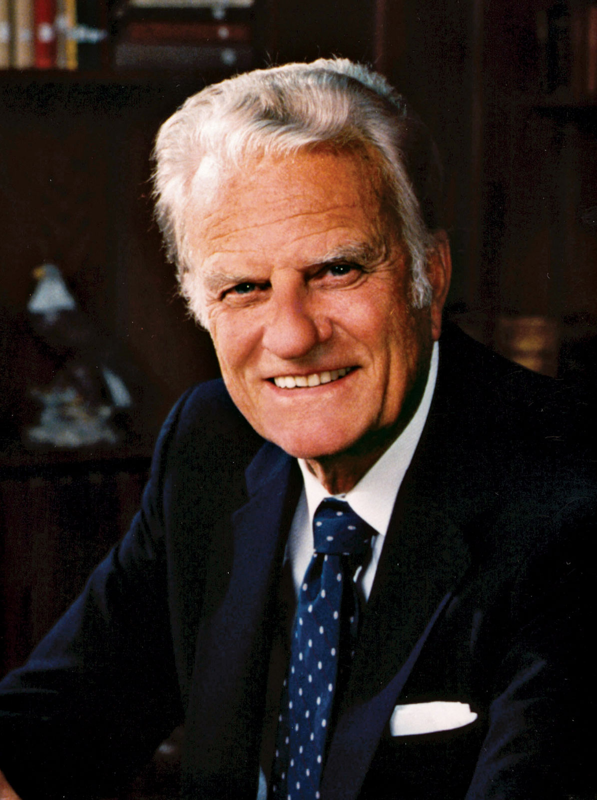

William Franklin Graham Jr. KBE was an American evangelist, a prominent
evangelical Christian figure, and an ordained Southern Baptist minister
who became well-known internationally in the late 1940s. One of his
biographers has placed him "among the most influential Christian
leaders" of the 20th century.

Prominent evangelical Christian figure
Timeline
1918: Born Nov. 7 in Charlotte, N.C.
1934: Made personal commitment to Christ during Charlotte, N.C., revival meeting.
1936: Earned money for college as a Fuller Brush salesman. Attended Bob Jones College in Cleveland, Tenn.
1937-40: Attended and graduated from Florida Bible Institute near Tampa, Fla.
1939: Ordained to the ministry in a Southern Baptist church in Florida.
1943: Graduated from Wheaton College, Wheaton, Ill. Married Ruth McCue Bell.
1943-45: Pastor, First Baptist Church, Western Springs, Ill.